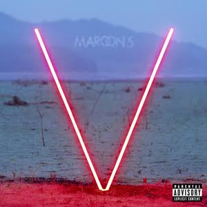
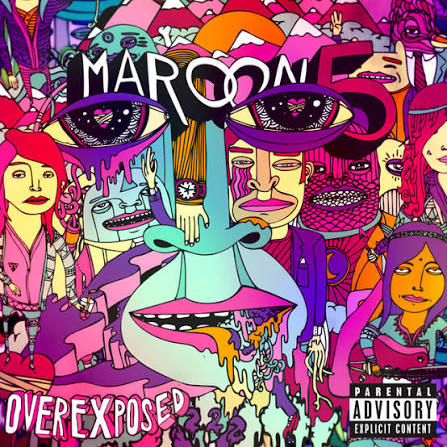

Adam Levine
Rol del grupo: Cantante principal y guitarrista
Fecha de nacimiento: 18 marzo de 1979
Rol del grupo: Cantante principal y guitarrista
Fecha de nacimiento: 18 marzo de 1979
Rol del grupo: Guitarrista principal
Fecha de nacimiento: 5 de octubre de 1978
Rol del grupo: Baterista
Fecha de nacimiento: 23 de mayo de 1970
Rol del grupo: Teclados y guitarra rítmica
Fecha de nacimiento: 2 de abril de 1979
Rol del grupo: Teclados y coros
Fecha de nacimiento: 29 de marzo de 1981
Rol del grupo: Bajo, teclados y multiinstrumento
Fecha de nacimiento: 29 de junio de 1978
Fecha de salida:
Visualizaciones: ~1.268 millones
Likes: ~4'7 millones
Reproducciones en Spotify: ~1.466 millones
Letra: "One more night" letra
Fecha de salida:
Visualizaciones: ~4.104 millones
Likes: ~22 millones
Reproducciones en Spotify: ~2.075 millones
Letra: "Girls like you" letra
Fecha de salida: 13 de enero de 2015
Visualizaciones: ~4.443 millones
Likes: ~17 millones
Reproducciones en Spotify: ~2.435 millones
Letra: "Sugar" letra
(Si la información de la canción ya se encuentra en el apartado anterior evitaré duplicar los datos de la canción pasando directamente a la mejor parte y al por qué me gusta)
Fecha de salida: 8 de octubre de 2019
Visualizaciones: ~1.268 millones de visualizaciones
Likes: ~10 millones
Reproducciones en Spotify: 2.560 millones
> En general la canción me parece buena
> Es un cambio de aire respecto al resto del top, es una canción más calmada sobre los recuerdos, tiene una letra bonita

Fecha de salida: 12 de diciembre de 2019
Visualizaciones: 541 millones de visualizaciones
Likes: 2'5 millones de likes
Reproducciones en Spotify: ~2.520 millones
> Principalmente el estribillo del final junto a lo que le precede es mi parte favorita de la canción, que coincide también con la del videoclip.
> Junto a el top 1 fue una de las canciones que simplemente me encantaba todo; la letra, el ritmo, el videoclip y para mi lo mejor es como le dieron la vuelta como concepto, ya que no va de una búsqueda, sino de una pérdida.

Fecha de salida: 11 de mayo de 2012
Visualizaciones: ~1.009 millones de visualizaciones
Likes: 6'4 millones de likes
Reproducciones en Spotify: ~2.890 millones
> Para mi toda la canción es la mejor parte.
> Es mi canción favorita principalmente por la letra, en general me gusta el significado de toda la canción como concepto y la parte del rapero Wiz Khalifa se siente como un cambio de ritmo que te devuelve de lleno a la canción, además, la escuche de pequeño y me pareció muy pegadiza, tanto que a día de hoy la sigo escuchando sin saltármela.